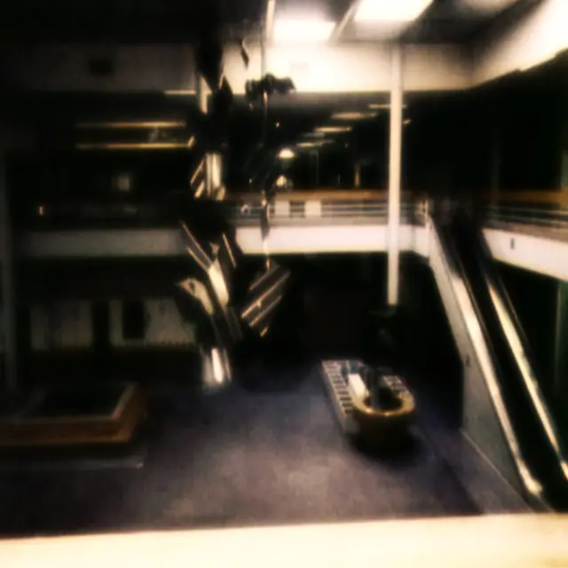
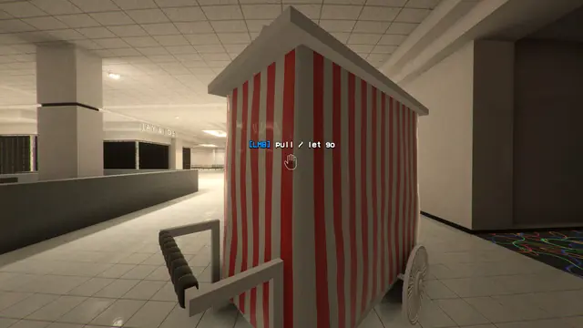
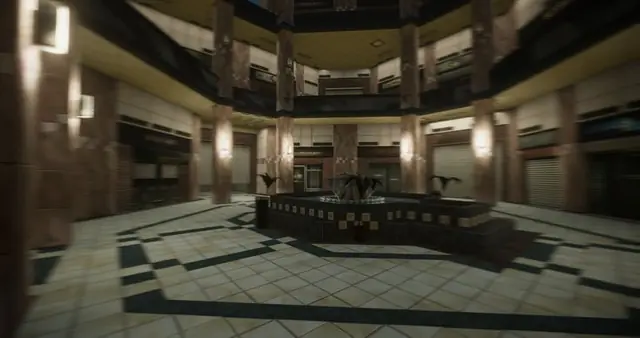
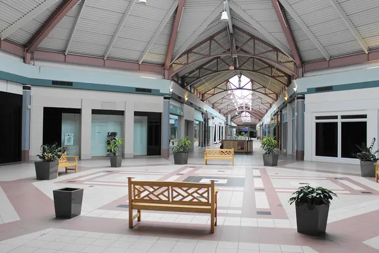
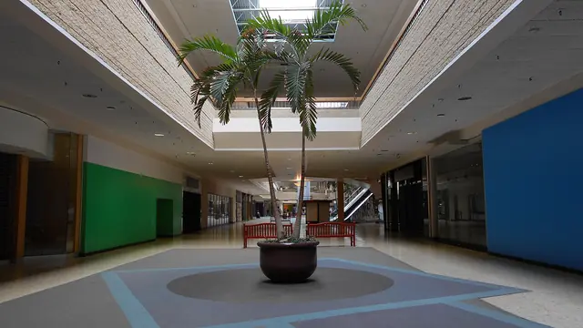
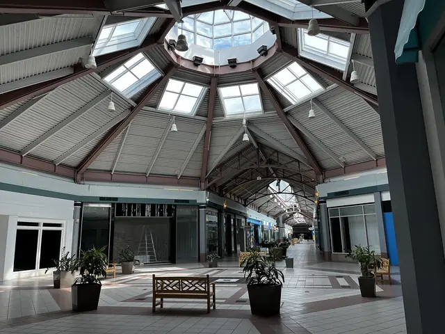
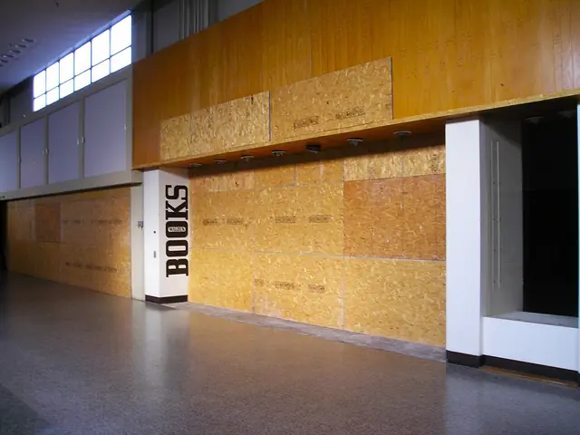

The feel
Mallsoft is music for an imagined visit to a shopping mall, heavily reverberant, with faint echoes of programmed background music.1 Its melodies sit low in the mix, and the mood is one of floating aimlessly through a shopping centre.2 Its teenage fans can be nostalgic for a mall life they never actually had.3
The pictures show malls at their most perfect, with glistening marble and white staircases that seem to rise for ever,4 and often nobody in them at all.3 A guide who runs tours of dead malls explains the pull: the tiles and polished brass railings were put there to say the place is important, so seeing it empty feels "uncanny and eerie".5
- empty
- fluorescent
- hushed
- after hours
- peach and teal
- still running
Where it comes from
Mallsoft is a micro-genre that grew out of vaporwave and was released mainly on Bandcamp, with the first records appearing around 2013.1 Bandcamp Daily names Hantasi's Vacant Places and 식료품groceries' Yes! We're Open as archetypal records, alongside 猫 シ Corp.'s Palm Mall and Disconscious's Hologram Plaza,2 and Palm Mall (2014) became almost shorthand for the genre.1 The setting goes back to Victor Gruen's Southdale, which opened outside Minneapolis in 1956 as the first enclosed mall in the United States.6,7 From 2015 the filmmaker Dan Bell put walks through failing malls on YouTube and scored them with vaporwave,8 and walking sims such as Anemoiapolis now let players wander malls emptied of their crowds.9
Core elements
Empty malls
Malls in this style have nobody in them. Internet Club's covers never show a person, only pristine, empty malls,3 and an office or a mall turns otherworldly once its chatter and its occupants are taken away.9
The garden court
The setting is the mall Victor Gruen designed at Southdale: shops on two levels joined by escalators, around a garden court under a skylight, with a fishpond, sculpted trees and balconies hung with plants.7 Almost every regional mall in America copied the plan.7
Polished finishes
Mallwave recreates a visit to the mall with pop from the 1970s, 1980s and 1990s.3 The finishes are the ones a dead mall tour lingers on: detailed tiles and polished brass railings that say the place is important, fluorescent mirrored hallways, faux-brick tiling and murky glass atriums over the corridors.5
Indoor plants and fountains
Gruen's own list of Southdale's attractions includes trees, tropical plants, a pond and a fountain.6 One fan's favourite way to listen is over footage of a mall covered in palm trees, with two empty escalators rolling,3 and 猫 シ Corp. calls escalators "the automated stairs to heaven".10
Signs of decline
A dead mall has few shops and fewer shoppers, or has been abandoned altogether. Where it is still open, the gates come down over empty units.8 Add shuttered kiosks, plastic trees, fountains with no water and a wall of payphones.5
Distant background music
The music is heard from afar: background music pushed into the distance behind field recordings of busy spaces,1 in directionless, echo-heavy records that keep melodies to a bare minimum.2
How to do it
Plan two levels round a court
Put the shops on two levels joined by escalators, around a garden court under a skylight, as Gruen did at Southdale.7 The developer Alfred Taubman put his escalators at both ends so one loop brings shoppers back to the start, kept main corridors to no more than 1,000 feet (about 300m), and used clear handrails so the shops upstairs stay in view.7
Add skylights over the court
Bring daylight in through skylights over the court. Taubman recessed them so sunlight never glared off shop windows, and put small lights beside them that come on as daylight fades, so dusk never tells shoppers it is time to go home.7 Keep it bright even when it is empty, as Anemoiapolis does, with light bouncing off glossy surfaces.9
Polish the floor
Malls once laid monolithic terrazzo, which Taubman compares to a skating rink underfoot,7 and vaporwave covers show malls with glistening marble surfaces.4 In a PBR material, roughness sets how sharp the reflections are, from a mirror at 0 to matte at 1, so keep a polished floor near the low end and add scuffs with a roughness map.11
Dress it sparingly
Pick a few objects that define the place: Anemoiapolis gives its mall candy machines, shutters and coin-operated rides, and rarer objects double as landmarks for lost players.9 Close empty units as failing malls do, with the gate down, or a tarp over it printed with a happy stock photo.8
Walk it in first person
Dan Bell shoots his dead mall tours as a first-person walk, meant for headphones, "like a video game".8 Anemoiapolis plays as a walking sim,9 and its developer planned a switch to turn the monsters off for players who want a more atmospheric game.12
Slow the music down
Start from easy listening of the 1980s or 1990s, take a loop down into the 70s BPM, cut some high end with a low-pass filter and add plenty of reverb and delay.13 Then push the music into the distance behind field recordings of a busy mall, down to a rustle of pocket change or a cough.1
Play music from ceiling speakers
Mallsoft moves through space: Moffat singles out a track that goes from the dry, carpeted stereo shop to the reflective concourse to the PA of the mall diner.1 In a game, play the music from speaker emitters with attenuation, so it is loudest beneath each speaker and fades as the player walks on.14 Give each space its own reverb zone, and lengthen the fade when walking from a dry room into a long reverb.15
Cheat sheet
Do
- Leave the music playing. In Anemoiapolis, relaxing music still plays over the empty hall's speakers.9
- Let small sounds echo. Reverb on footsteps and on gumballs clattering to the floor shows players how big the space is.9
- Invent your own mall. 猫 シ Corp. sets Palm Mall in an alternative reality, the world of Hiraeth, to take the listener to a place he made.16,10
- Record your own ambience. Palm Mall's borrowed mall sounds have been reused so often they became "the new Wilhelm scream". For a later album, 猫 シ Corp. recorded most of his ambience himself, in Helsinki.10
- Keep any threat ambiguous, so players never know whether something is following them or it is all in their head.12
Avoid
- Rubble and rot. The covers show malls as perfect, almost heavenly spaces,4 and the eeriness comes from a place built to look important standing empty.5
- Jump scares. Anemoiapolis earned praise for building its atmosphere with so little, while many PC horror games are rife with jumpscares.9
- A melody up front. Mallsoft keeps melodies and chords low in the mix, or at a bare minimum.2
- Treating it as plain vaporwave. Moffat hears mallsoft as place-making, built from small details and spatial clues, and less concerned than vaporwave with critiquing late capitalism.1
Tools and tutorials
- Dead Mall Series
Dan Bell's first-person walks through failing and abandoned malls.8 Start with the neon one for lighting.
- Labelscar
A retail history blog with photo tours of decades of malls.
- Poly Haven
Free CC0 tile, concrete and terrazzo materials for your floor.
- Valhalla Supermassive
A free reverb plugin with the long tails this music needs.
Palette
Slate and skylight come from the Palm Mall cover, teal, peach and blue from Hologram Plaza, mauve from Neon Palm Mall, tile and oak from the Steeplegate Mall photo.
Feel the vibe
In motion
Listen
The whole album. 猫 シ Corp. gathers earthly samples around a science-fiction premise: shopping on other planets.1
YouTubeThe sunnier end of the genre. Bandcamp Daily calls it "psychedelic muzak",2 and Dan Bell plays it to explain the vaporwave in his Dead Mall Series.8
YouTubeOne of the records Bandcamp Daily calls archetypal mallsoft,2 and the darkest of these. Good for night levels.
YouTubeAnother archetypal record,2 set in a supermarket instead of a mall. Bright, tinny and strangely cheerful.
YouTubeMuzak for the game's own mall. Listen to how cheerful it stays.
YouTubeFrom Anemoiapolis, whose sound is footsteps, sparse music and humming lights.9 How to score an empty hall with almost nothing.
YouTube
More references















Games
- Self-Checkout Unlimited
An empty late-1990s mall after closing time, which Argent Games based on the mallsoft and dead mall genre, scored with smooth mall jazz and vaporwave.17
- Sunset Mall
Its developer calls it a vaporwave and mallsoft walking sim, set in a randomly generated 1990s mall and scored with smooth vaporwave.18
- Anemoiapolis
A walking sim through a bright, empty mall of candy machines, shutters and coin-operated rides, with almost nothing explained.9
Film, art and more
- Dawn of the Dead
Survivors hole up in a shopping mall. Study its plazas and escalators with the shoppers gone.
- Dead mall
Background reading on how and why malls lose their shops and shoppers.
- Southdale Center
Victor Gruen's mall, the first enclosed mall in the United States and the prototype for the rest.6
- Muzak
The piped background music that mallsoft edits, layers and pushes into the distance.1
- #mallsoft: Reflections On A Dead Genre
Douglas Moffat's listening guide to the genre, album by album, from Palm Mall to a record built on a Kmart employee's in-store tapes.1
Sources
- 1#mallsoft: Reflections On A Dead Genre
- 2Genre As Method: The Vaporwave Family Tree, From Eccojams to Hardvapour
- 3The Teens Who Listen to ‘Mallwave’ Are Nostalgic for an Experience They’ve Never Had
- 4Escaping Reality: the Iconography of Vaporwave
- 5The Dead Mall Society
- 6Southdale Center
- 7The Terrazzo Jungle
- 8Inside America's dead shopping malls
- 9Anemoiapolis: Chapter 1 Review – Everywhere and Nowhere
- 10The Mall, Nostalgia, and the Loss of Innocence: An Interview With 猫 シ Corp.
- 11Physically Based Materials
- 12A Work in Progress - Behind the curtain
- 13How to Make Vaporwave in Reason
- 14Sound Attenuation
- 15Audio Volumes
- 16An Interview with Jornt Elzinga AKA 猫 シ Corp
- 17Self-Checkout Unlimited
- 18Sunset Mall